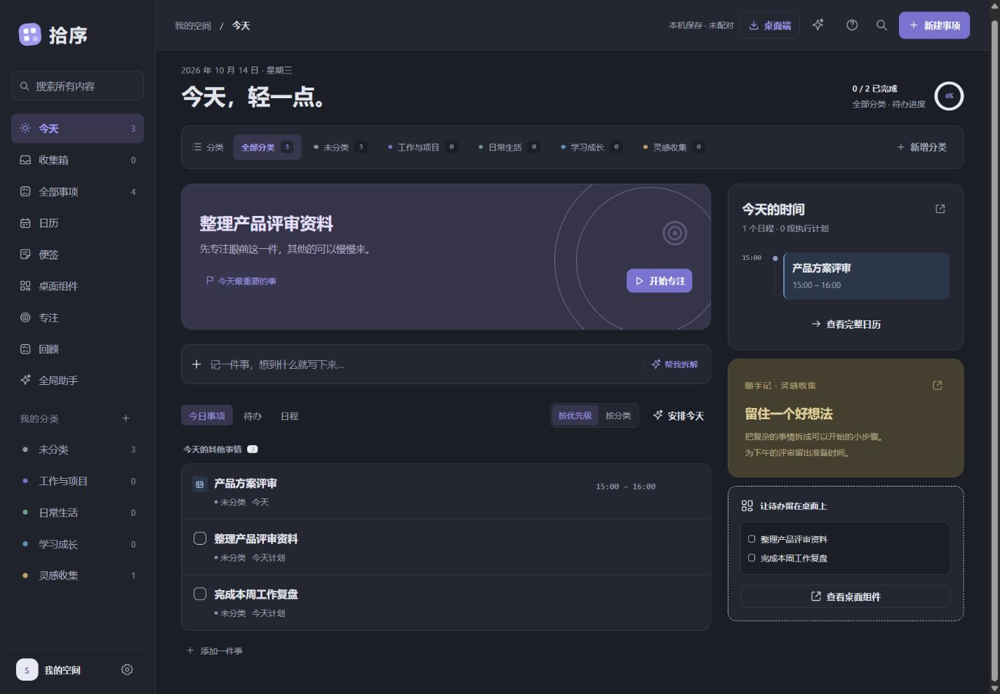

把拾序，带到桌面。
原生桌面组件、托盘提醒、全局助手。
下一步，随时在眼前。
Windows 版
0.4.19 · x64 · 84.6 MiB
下载 Windows 版Windows 10 2004（19041）及以上 / Windows 11，x64 电脑。
ZIP 压缩包，解压后运行。
拾序，
也在手机里。
Android 0.1.6 小范围测试版 · 约 4 MB。复用网页工作台，登录同一账户同步事项；按需连接手机系统日历、启用本地提醒。
下载 Android 测试版 ↓Android 7 及以上，需要较新的系统 WebView。可在设置里开启锁屏实时同步，并允许通知、后台运行和自启动。已通过 Android 16 模拟器锁屏 Doze 测试；厂商手机仍需验证，强行停止或断网会中断连接。

解压。打开。
开始记录。
解压到固定文件夹
保留压缩包里的全部文件。不要直接在压缩包内启动，也不要只拷贝 EXE。
运行 Shixu.exe
先记一件待办、安排一场日程，或者留一张便签。桌面组件可在应用内创建。
需要时连接网页
在桌面和网页登录同一 Fairy 账户，事项与分类会自动加密同步。
这一版，
让记录接着走。
当前发布版本 0.4.19
网页与桌面加密同步
事项和分类在设备上加密，再上传到个人账户。API 密钥、聊天记录和桌面窗口配置留在本机。
冲突先处理，再继续
不同记录的修改可以合并；同一记录的并发修改会暂停同步，保留两端内容供你选择。
已有的日常能力继续保留
待办、日程、便签、分类、桌面组件、专注和助手，仍在同一份工作台里。
查看压缩包校验信息
SHA-256
76851369BFC3FF34D563554688532DFFC3ECE3670EEDE1AA971CBFFA3FEFF357